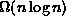
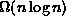

Data Structures and Algorithms
with Object-Oriented Design Patterns in Java
Data Structures and Algorithms
with Object-Oriented Design Patterns in Java
The preceding sections present
three  sorting algorithms--quicksort, heapsort, and the two-way merge sort.
But is
sorting algorithms--quicksort, heapsort, and the two-way merge sort.
But is  the best we can do?
In this section we answer the question by showing that
any sorting algorithm that sorts using only binary comparisons
must make  such comparisons.
If each binary comparison takes a constant amount of time,
then running time for any such sorting algorithm is also .
the best we can do?
In this section we answer the question by showing that
any sorting algorithm that sorts using only binary comparisons
must make  such comparisons.
If each binary comparison takes a constant amount of time,
then running time for any such sorting algorithm is also .
Consider the problem of sorting the sequence
comprised of three distinct items.
That is, .
Figure  illustrates a possible sorting algorithm
in the form of a decision tree .
Each node of the decision tree represents one binary comparison.
That is, in each node of the tree,
exactly two elements of the sequence are compared.
Since there are exactly two possible outcomes for each comparison,
each non-leaf node of the binary tree has degree two.
illustrates a possible sorting algorithm
in the form of a decision tree .
Each node of the decision tree represents one binary comparison.
That is, in each node of the tree,
exactly two elements of the sequence are compared.
Since there are exactly two possible outcomes for each comparison,
each non-leaf node of the binary tree has degree two.
Figure: A decision tree for comparison sorting.
For example, suppose that a<b<c.
Consider how the algorithm shown in Figure discovers this.
The first comparison compares a and b which reveals that a<b.
The second comparison compares a and c to find that a<c.
At this point it has been determined that a<b and a<c--
the relative order of b and c is not yet known.
Therefore, one more comparison is required to determine that b<c.
Notice that the algorithm shown in Figure works correctly
in all cases because every possible permutation of the sequence S
appears as a leaf node in the decision tree.
Furthermore, the number of comparisons required in the worst case
is equal to the height of the decision tree!
Any sorting algorithm that uses only binary comparisons can be represented by a binary decision tree. Furthermore, it is the height of the binary decision tree that determines the worst-case running time of the algorithm. In general, the size and shape of the decision tree depends on the sorting algorithm and the number of items to be sorted.
Given an input sequence of n items to be sorted,
every binary decision tree that correctly sorts the input sequence
must have at least n! leaves--one for each permutation of the input.
Therefore, it follows directly from Theorem
that the height of the binary decision tree is at least
:
Since the height of the decision tree is , the number of comparisons done by any sorting algorithm that sorts using only binary comparisons is . Assuming each comparison can be done in constant time, the running time of any such sorting algorithm is .
 Copyright © 1998 by Bruno R. Preiss, P.Eng. All rights reserved.
Copyright © 1998 by Bruno R. Preiss, P.Eng. All rights reserved.